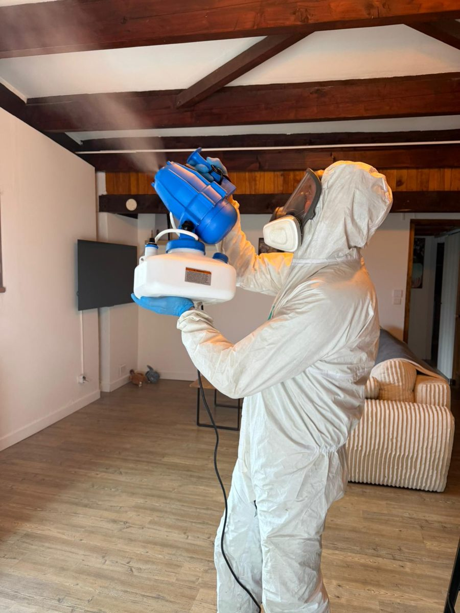

Puces dans la maison : traiter les sols et les œufs
Des piqûres groupées aux chevilles, souvent en rentrant de vacances ou en emménageant : les puces ont continué leur cycle dans les tapis, les parquets et les canapés.
Mis à jour le · par Mathias Sergent, technicien certifié
- Technicien certifié Certibiocide
- Particuliers et professionnels
- Tout le département 13

Les signes d'une infestation
- Des piqûres groupées, surtout aux chevilles et aux mollets.
- De petits insectes sombres qui sautent sur les sols clairs ou les chaussettes blanches.
- Un animal qui se gratte beaucoup.
- Des piqûres en emménageant dans un logement où vivait un chat ou un chien.
L'essentiel est dans le sol
Les puces adultes ne sont qu'une petite partie de la population : œufs, larves et cocons se trouvent dans les fentes du parquet, les tapis, les plinthes et les canapés.
Les cocons peuvent attendre des semaines avant d'éclore. C'est pour cela qu'un logement resté vide se réveille au retour des occupants, avec les vibrations et la chaleur.
Pour les piqûres au lit, la nuit, en ligne, pensez aussi aux punaises de lit : notre enseigne Punaises Assistance s'en occupe.
Comment on traite les puces
- Préparation
Aspiration soigneuse des sols et textiles, sac jeté dehors, linge lavé à haute température. Une fiche vous est remise.
- Traitement des sols
Produit adapté aux puces appliqué sur les sols, plinthes, tapis et zones de repos des animaux.
- Animaux
Les animaux doivent être traités en même temps par un produit vétérinaire : demandez conseil à votre vétérinaire.
- Contrôle
Un second passage peut être nécessaire pour les éclosions tardives.
Traitement des puces dans les Bouches-du-Rhône
Nous intervenons à Marseille (16 arrondissements), dans le Pays d'Aix et autour d'Aubagne, depuis notre base de Trets. Nous passons aussi régulièrement à Gardanne et à Gémenos.
Le rendez-vous est fixé à l'appel, du lundi au samedi de 8 h à 19 h. Décrivez ce que vous voyez, ou envoyez une photo : cela nous aide à venir avec le bon matériel.
Comment savoir si ce sont des puces ?
| Signe | Ce que ça indique | Que faire |
|---|---|---|
| Piqûres groupées aux chevilles | Puces au sol ou dans les tapis | Aspiration puis traitement des sols |
| Petits points noirs dans le panier de l'animal | Déjections de puces | Traiter l'animal et ses couchages |
| Piqûres en rentrant dans un logement vide | Puces affamées après une absence | Traitement complet avant de réoccuper |
| Animal qui se gratte beaucoup | Infestation de l'animal | Avis du vétérinaire |
Par exemple, un logement resté fermé plusieurs semaines peut grouiller de puces au retour : les cocons éclosent avec les vibrations des pas. En pratique, traiter la maison sans traiter l'animal ne sert à rien, et inversement. Concrètement, aspirer soigneusement les sols et jeter le sac aussitôt retire une grande partie des œufs. Exemple fréquent : des puces après l'emménagement dans un logement où vivaient un chien ou un chat.
Puces : vos questions
Faut-il quitter le logement pendant le traitement ?
Oui, en général pendant quelques heures, animaux compris. Les consignes précises vous sont données avant l'intervention.
Pourquoi voit-on encore des puces après le traitement ?
Les cocons ne sont pas atteints par les produits : les puces qui en sortent meurent ensuite au contact des surfaces traitées. Continuez à passer l'aspirateur les jours suivants.
Et si je n'ai pas d'animal ?
Les puces peuvent venir de l'ancien occupant, d'un animal errant dans un vide sanitaire ou d'un rongeur. Le diagnostic permet de trouver l'origine.
Les puces vivent-elles sur les humains ?
Non, elles piquent l'homme mais vivent sur les animaux et dans leur environnement : tapis, parquets, couchages.
Combien de temps dure une infestation de puces ?
Elle peut durer des mois sans traitement, car les cocons résistent. Un traitement associé à l'aspiration régulière vient à bout du cycle.